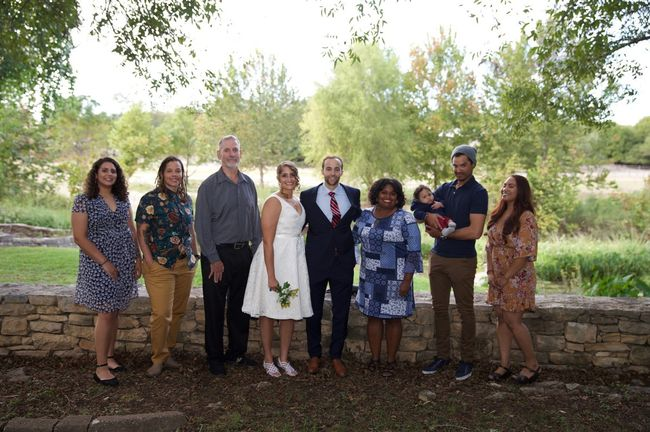

My Family
The Wife and Kids
I met my wife Aneasa (pronounced uh-knee-suh) shortly after getting out of the Air Force. I was with some odl friends and they mentioned one of their coworkers was finally single after a 6 year relationship. I had asked them to set it up as a joke, and they did it thinking it would go nowhere, as she apparently wasn't trying to get in a relationship any time soon. She ended up accepting the date and we went to dinner and a movie, went to a hookah lounge afterwards and just spent the night talking and getting to know one another. When the night was over, I knew she was the one and we have been together ever since. We have been together since April 2015 and we got married in May 2019, which is also the year we welcomed our first son. Our daughter was born a couple of years later in August 2022 and we have a beautiful little family and I couldn't be happier with them.
Mom and Dad
My mom and dad met when they were both in the Army. My dad was a Drill Instructor and my mom was one of his troops. They had a relationship, which was against the rules, due to him being her direct superior (its called fraternization) and they were discharged. My mother became pregnant with me shortly therafter. My sister Jackie was born 2 years later and my youngest sister Lisa was born 4 years after that. Im not entirely sure about my dad's past with his ex-wife. All I know is that one day he came home to find his two kids and the furniture gone. He doesn't really like to talk about it.
The Siblings
As I mentioned in my intro, I have a total of four siblings. The siblings are, in order from oldest to youngest are: Sabrina (age 41), Andrae (age 40), Me (age 32), Jackie (age 30), and Lisa (age 26)
Sabrina
I honestly don't have a whole lot to say about Sabrina. Out of all of my siblings, we are the least closest. She just does her own thing, always has. The things I do know about her was that when my dad and his ex-wife separated, she stayed with her mom. She grew up in "the hood" and was always getting into trouble. She has been in jail, had a rap career, lived in Alaska, and now she lives in Moreno Valley with her two sons and her girlfriend. She always knows how to have a good time though.
Andrae
Andrae is a diffrerent kind of person. For a long time he hated our dad because he felt that he got the short end of the stick in regards to his upbringing. When my sisters and I came into the picture, my dad was in a better place financially and was able to provide us with more growing up, and I dont think my brother ever accepted that. I think I am the closest to him in regard to his relationships with the rest of us. We mostly get along because of our sense of humor and mutual love of video games. Our personalities do not mesh at all unfortunately. Andrae has somewhat of a superiority complex. I couldn't tell you where he gets it from though. Right now I am the only person that has contact with him because he basically alienated himself from the rest of our family.
Jackie
Jackie is the quintessential golden child. My Abuela said that when she was born she saw a halo and angel wings around her. From birth Jackie could do no wrong. 4.0+ student, superior reading level from ealry childhood, retains information after consuming it once, you name it. She never even got spanked or timeouts as a child. She was valedictorian in school, got a full ride to UC Berkely and graduated top of her class. Reached the rank of Major in the Army before being honorably discharged. Now she lives with her husband in Georgia and is expercting her first child sometime in February.
Lisa
If Jackie was the golden child, the Lisa is the black sheep. She was always rowdy and manipulative, even at a young age. She has my mom and dad wrapped around her little fingers all the way top high school. She could do horrible things and never suffer any consequences, so of course that led to worse behavior. She has stolen my parents cars in the dead of night to go be with friends or boys, she once tried to smuggle marijuana across the border to Texas, she got kicked out of University of South Carolina, where she got a scholarship for Volleyball, for having marijuana in dorm room. Anger issues, fights, not showing up for work, the list goes on. She has since gotten her act together and is actually getting married in Texas this September!
So that is my family in a nutshell. They are all a really nice bunch once you get to know them. I barely get to see any of them unfortunately, as my parents and both of my younger sisters live in Texas and Georgia. Andrae is a RN so he is always at work and Sabrina is a fottball player for the San Diego Rebellion, so she is never home as well. Hopefully I'll see them all soon.

My family in order from right to left: Lisa, Sabrina, Dad, Jackie, her husband Tyler, Mom, my son and I, and my wife Aneasa